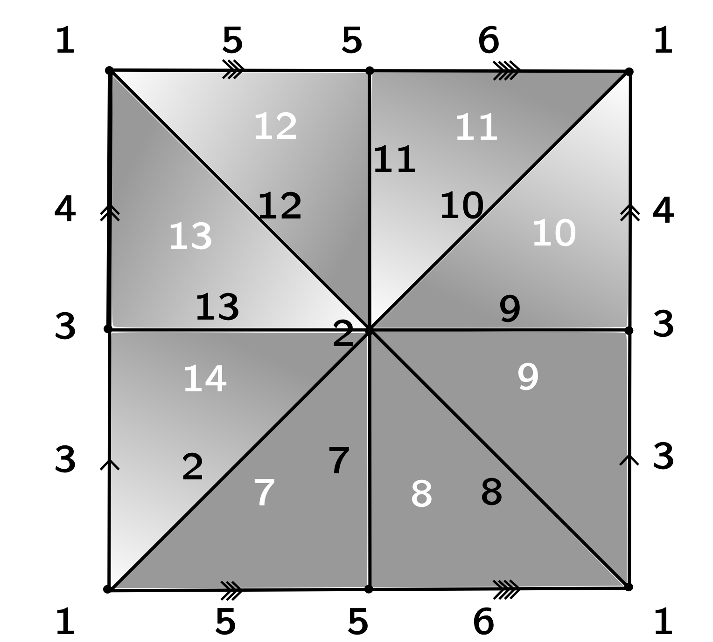
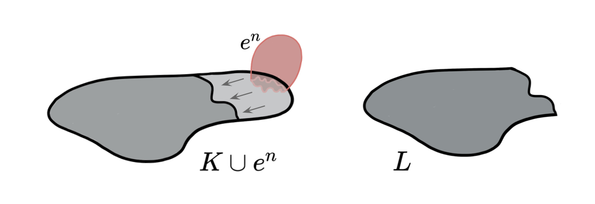
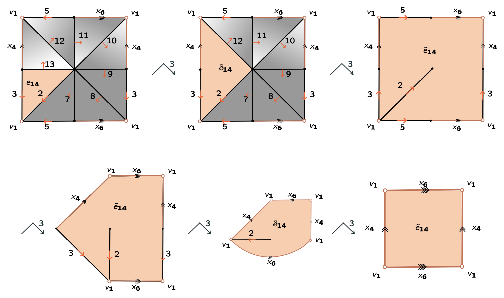
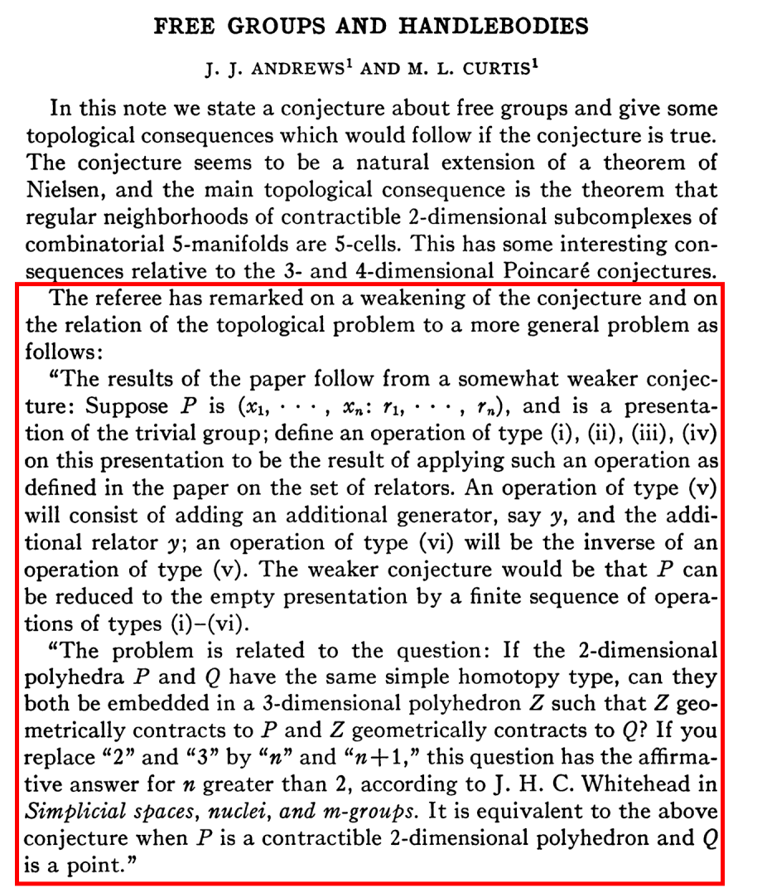
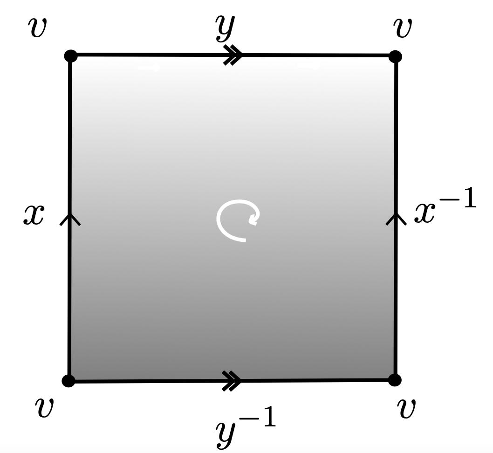
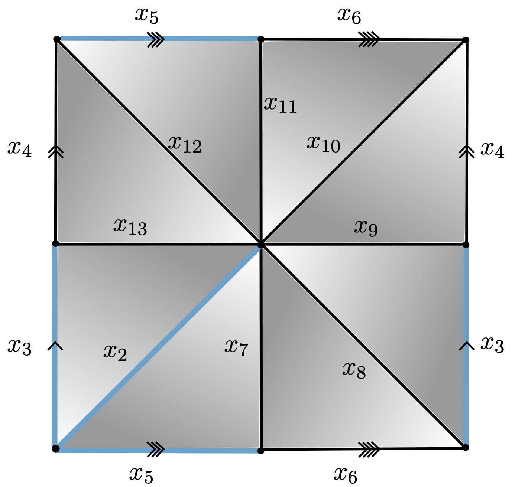

From collapses to discrete Morse theory:
algorithms for shape simplification
XIMENA FERNANDEZ
City St George's University of London
The Tube Neighbourhood Meeting
17 July 2025
'Every mathematician has a secret weapon.
Mine is Morse theory.'
Raoul Bott.
Motivation
Motivation
Let $K$ be a finite CW-complex.
Q: Is there any algorithm to "determine" its homotopy type?
A: NO
Motivation
Let $K$ be a finite CW-complex.
Q: Is there any algorithm to find a complex $L$ such that $K \simeq L$,
with $L$ "simpler"?
Motivation
Let $K$ be a finite CW-complex.
Q: Is there any algorithm to find a complex $L$ such that $K \simeq L$,
with $L$ "simpler"?
A: YES.
Collapses & Discrete Morse Theory
Combinatorial Homotopy Theory
Simple Homotopy Theory
J.H.C. Whitehead ~1950
Simple Homotopy Theory
Let $K,L$ be CW-complexes.
- There is an elementary collapse $K\searrow^{\hspace{-5pt}e} L$ (or elementary expansion $L^{\hspace{5pt}e}\hspace{-8pt}\nearrow K$) if
- For simplicial complexes, there is an elementary collapse $K\searrow^{\hspace{-5pt}e} L$ if $L=K\smallsetminus\{\sigma, \tau\}$ with $\tau$ the only simplex containing properly $\sigma$.

Simple Homotopy Theory
Let $K,L$ be CW-complexes.
- A collapse $K\searrow L$ is a sequence of elementary collapses $$K=K_0\searrow^{\hspace{-5pt}e} K_1 \searrow^{\hspace{-5pt}e} K_2 \searrow^{\hspace{-5pt}e} \dots \searrow^{\hspace{-5pt}e} K_n = L$$
Simple Homotopy Theory
Let $K,L$ be CW-complexes.
- There is an $n$-deformation $K \nearrow \hspace{-2 pt}\searrow^{^{\hspace{-5pt}n}}L$ if there is a sequence of CW-complexes $$K=K_0,K_1,\dots K_r=L$$ s. t. $K_i \searrow^{\hspace{-5pt}e} K_{i+1}$ or $K_i ^{\hspace{5pt}e}\hspace{-5pt}\nearrow K_{i+1}$ and $\dim(K_i)\leq n$ $\forall 0\leq i\leq r$.
- There is simple homotopy equivalence $K\nearrow\hspace{-2 pt}\searrow L$ if $K \nearrow \hspace{-2 pt}\searrow^{^{\hspace{-5pt}n}}L$ for some $n\in \mathbb{N}$.
Simple Homotopy Theory
Let $K,L$ be CW-complexes.
- YES $K \nearrow\hspace{-2 pt}\searrow L \xRightarrow[]{:)} K\simeq L.$
- BUT $K\simeq L ~~ \;\not\!\!\! \xRightarrow[]{:(} K \nearrow\hspace{-2 pt}\searrow L $
The converse is not true, the obstruction is measured by the Whitehead group.
If the Whitehead group $\mathrm{Wh} (K)$ of the complex $K$ is trivial, then any complex homotopy equivalent to $K$ is also simple homotopy equivalent to $K$. - For $K$ contractible, $\mathrm{Wh}(K)=0$ and, hence, $K\simeq * \Leftrightarrow K \nearrow\hspace{-2 pt}\searrow *.$
- (Whitehead '50) If $K, L$ are $n$-complexes, then $K \nearrow\hspace{-2 pt}\searrow L \Rightarrow K \nearrow\hspace{-2 pt}\searrow^{^{\hspace{-7pt}n+1}}L$ if $n\neq 2$.
For $n=2$, this question is open.
Discrete Morse Theory
Discrete Morse Theory
Goal: 'Simplify' the cell decomposition of a CW-complex while preserving its homotopy type.
- $K$ a regular CW-complex.

Discrete Morse Theory
Goal: 'Simplify' the cell decomposition of a CW-complex while preserving its homotopy type.
- $K$ a regular CW-complex.
- $f:K\to \mathbb{R}$ a discrete Morse function.
For every cell $e^n$ in $K$,
$|\{e^n\succ e^{n-1}: f(e^n)\leq f(e^{n-1})\}|\leq 1$ and
$|\{e^n\prec e^{n+1} : f(e^n)\geq f(e^{n+1})\}|\leq 1.$

Discrete Morse Theory
Goal: 'Simplify' the cell decomposition of a CW-complex while preserving its homotopy type.
- $K$ a regular CW-complex.
- $f:K\to \mathbb{R}$ a discrete Morse function.
- $C$ the set of critical cells of $K$.
An $n$-cell $e^n \in K$ is a critical cell of index $n$ if the values of $f$ in every face and coface of $e^n$ increase with dimension.

Discrete Morse Theory
Goal: 'Simplify' the cell decomposition of a CW-complex while preserving its homotopy type.
- $K$ a regular CW-complex.
- $f:K\to \mathbb{R}$ a discrete Morse function.
- $C$ the set of critical cells of $K$.
Theorem [Forman, '98]. $K$ is homotopy equivalent to a CW-complex $\mathrm{core}_f(K)$ with exactly one cell of dimension $k$ for every critical cell of index $k$.

Discrete Morse Theory
Goal: 'Simplify' the cell decomposition of a CW-complex while preserving its homotopy type.
- $K$ a regular CW-complex.
- $f:K\to \mathbb{R}$ a discrete Morse function.
- $C$ the set of critical cells of $K$.
Theorem [Forman, '98]. $K$ is homotopy equivalent to a CW-complex $\mathrm{core}_f(K)$ with exactly one cell of dimension $k$ for every critical cell of index $k$.
Discrete Morse Theory
Level subcomplex: $K_\alpha = \displaystyle \bigcup_{ \substack{e\in K, \\f(e)\leq \alpha}}\bar e$. Lemma [Forman, '98]. Let $f\colon K\to \mathbb{R}$ be a discrete Morse function.
A. If $f^{-1}(\alpha, \beta]$ contains no critical cells, then $K_\beta \searrow K_\alpha$.
B. If $f^{-1}(\alpha, \beta]$ contains exactly one critical $k$-cell, then $K_\beta \simeq K_\alpha \cup e^k$.
Discrete Morse Theory ü§ù Simple Homotopy Theory
Lemma (Internal collapse): Let $K$ be a CW-complex of dimension $\leq n$. Let $\varphi:\partial D^n\to K$ be the attaching map of an $n$-cell $e^n$. If $K \searrow L$, then \[K\cup e^n \nearrow\hspace{-1.5 pt} \searrow^{^{\hspace{-8pt} n+1}}L\cup \widetilde{e}^n\] where the attaching map $\widetilde{\varphi}\colon \partial D^ n\to L$ of $\widetilde{e}^n$ is defined as $\widetilde{\varphi}=r \varphi$ with $r:K\to L$ the canonical strong deformation retract induced by the collapse $K \searrow L$.

Discrete Morse Theory ü§ù Simple Homotopy Theory
Lemma (Internal collapse): Let $K$ be a CW-complex of dimension $\leq n$. Let $\varphi:\partial D^n\to K$ be the attaching map of an $n$-cell $e^n$. If $K \searrow L$, then \[K\cup e^n \nearrow\hspace{-1.5 pt} \searrow^{^{\hspace{-8pt} n+1}}L\cup \widetilde{e}^n\] where the attaching map $\widetilde{\varphi}\colon \partial D^ n\to L$ of $\widetilde{e}^n$ is defined as $\widetilde{\varphi}=r \varphi$ with $r:K\to L$ the canonical strong deformation retract induced by the collapse $K \searrow L$.

Discrete Morse Theory ü§ù Simple Homotopy Theory
Lemma (Internal collapse): Let $K$ be a CW-complex of dimension $\leq n$. Let $\varphi:\partial D^n\to K$ be the attaching map of an $n$-cell $e^n$. If $K \searrow L$, then \[K\cup e^n \nearrow\hspace{-1.5 pt} \searrow^{^{\hspace{-8pt} n+1}}L\cup \widetilde{e}^n\] where the attaching map $\widetilde{\varphi}\colon \partial D^ n\to L$ of $\widetilde{e}^n$ is defined as $\widetilde{\varphi}=r \varphi$ with $r:K\to L$ the canonical strong deformation retract induced by the collapse $K \searrow L$.
Discrete Morse Theory ü§ù Simple Homotopy Theory
Lemma (Internal collapse): Let $K$ be a CW-complex of dimension $\leq n$. Let $\varphi:\partial D^n\to K$ be the attaching map of an $n$-cell $e^n$. If $K \searrow L$, then \[K\cup e^n \nearrow\hspace{-1.5 pt} \searrow^{^{\hspace{-8pt} n+1}}L\cup \widetilde{e}^n\] where the attaching map $\widetilde{\varphi}\colon \partial D^ n\to L$ of $\widetilde{e}^n$ is defined as $\widetilde{\varphi}=r \varphi$ with $r:K\to L$ the canonical strong deformation retract induced by the collapse $K \searrow L$.

Discrete Morse Theory ü§ù Simple Homotopy Theory
Lemma (Internal collapse): Let $K$ be a CW-complex of dimension $\leq n$. Let $\varphi:\partial D^n\to K$ be the attaching map of an $n$-cell $e^n$. If $K \searrow L$, then \[K\cup e^n \nearrow\hspace{-1.5 pt} \searrow^{^{\hspace{-8pt} n+1}}L\cup \widetilde{e}^n\] where the attaching map $\widetilde{\varphi}\colon \partial D^ n\to L$ of $\widetilde{e}^n$ is defined as $\widetilde{\varphi}=r \varphi$ with $r:K\to L$ the canonical strong deformation retract induced by the collapse $K \searrow L$.

Discrete Morse Theory ü§ù Simple Homotopy Theory
Lemma (Internal collapse): Let $K$ be a CW-complex of dimension $\leq n$. Let $\varphi:\partial D^n\to K$ be the attaching map of an $n$-cell $e^n$. If $K \searrow L$, then \[K\cup e^n \nearrow\hspace{-1.5 pt} \searrow^{^{\hspace{-8pt} n+1}}L\cup \widetilde{e}^n\] where the attaching map $\widetilde{\varphi}\colon \partial D^ n\to L$ of $\widetilde{e}^n$ is defined as $\widetilde{\varphi}=r \varphi$ with $r:K\to L$ the canonical strong deformation retract induced by the collapse $K \searrow L$.

Discrete Morse Theory ü§ù Simple Homotopy Theory
Theorem [F. 2024]: Let $K$ be a regular CW-complex of dim $n$ and let $f:K\to \mathbb{R}$ be discrete Morse function.
Then, $f$ induces a sequence of internal collapses given by a filtration of $K$
\[ \varnothing = K_{-1} \subseteq L_0 \subseteq K_0\subseteq L_1\subseteq K_1 \dots \subseteq L_{N}\subseteq K_{N}=K\]
such that:
- $K_j\searrow L_{j}$ for all $1\leq j\leq N$,
- $\displaystyle L_{j}=K_{j-1}\cup \bigcup_{i=1}^{d_j} e_i^j$, with $\{e_i^j: 1\leq i \leq d_j\}$ the set of critical cells of $f$ in $K_j$.
Moreover,
$ K \nearrow\hspace{-1.5 pt} \searrow^{^{\hspace{-8pt} n+1}}
L_0\cup \bigcup_{j=1}^{N} \bigcup_{i=1}^{d_j}\widetilde e_i^j = \mathrm{core}_f(K)$ the internal core of $K$.
* Here, the attaching maps of the cells $\widetilde e_i^j$ can be explicitly reconstructed from the internal collapses.
Discrete Morse Theory ü§ù Simple Homotopy Theory
Application:
The Andrews-Curtis conjecture
The Andrews-Curtis conjecture
Conjecture [Andrews & Curtis, 1965].
Any finite balanced presentation $\mathcal{P}=\langle x_1,\dots,x_n ~|~ r_1,\dots,r_n\rangle $ of the trivial group
can be transformed into the empty presentation $\langle ~|~\rangle$ by a
finite sequence of the following operations:
- replace $r_i \leadsto r_i^{-1}$
- replace $r_i\leadsto r_i r_j$, $j \neq i$
- replace $r_i\leadsto wr_i w^{-1}, $ for some $w\in F(x_1, x_2, \dots, x_n)$
- add a generator $x_{n+1}$ and a relator $x_{n+1}$, or the inverse of this operation
Tietze transformations
Theorem [Tietze, 1908].
Any finite presentation $\mathcal{P}=\langle x_1,\dots,x_n ~|~ r_1,\dots,r_m\rangle $ of a group $G$
can be transformed into any other presentation of the same group by a
finite sequence of the following operations:
- replace $r_i \leadsto r_i^{-1}$
- replace $r_i\leadsto r_i r_j$, $j \neq i$
- replace $r_i\leadsto wr_i w^{-1}, $ for some $w\in F(x_1, x_2, \dots, x_n)$
- add a generator $x_{n+1}$ and a relator $x_{n+1}$, or the inverse of this operation
- add a relator $1$, or the inverse of this operation
The Andrews-Curtis conjecture
Potential counterexamples.
- $\mathcal{P}=\langle x, y~|~ xyx = yxy,~ x^n = y^{n+1}\rangle,~n\geq 2~$ [Akbulut & Kirby, 1985]
- $\mathcal{P} = \langle x,y~|~x^{-1}y^n x = y^{n+1}, ~x = y^{-1}xyx^{-1}\rangle,~n\geq 2~ $ [Miller & Schupp, 1999]
- $\mathcal{P}=\langle x,y~| ~x=[x^m,y^n], y=[y^p,x^q]\rangle ,~n,m,p,q\in \mathbb{Z}~$ [Gordon, 1984]
- $\mathcal{P}=\langle x,y~| ~xy^2x^{-1} = y^3, yx^2y^{-1} = x^3\rangle$ [Crowell & Fox, 1968]
- $\mathcal{P}=\langle x,y, z~| ~z^{-1}yz = y^2, x^{-1}zx = z^2, y^{-1}xy = x^2\rangle~$ [Rapaport, 1968]
Theorem [Bridson, 2015] There exist balanced presentations of the trivial group that satisfy the AC-conjecture for which the minimun length of any simplification sequence is superexponential in the total length of the relators.
The Andrews-Curtis conjecture
Remark [Anonymous Referee]. AC-transformations of group presentations are in correspondence with 3-deformations of 2-complexes.
The Andrews-Curtis conjecture
Conjecture [Andrews & Curtis, 1965].
Conjecture
For any balanced presentation $\mathcal P$ of the trivial group, $\mathcal P \sim_{AC}\langle ~|~\rangle$.
For any contractible CW-complex $K$ of dimension 2, $K \nearrow \hspace{-2 pt}\searrow^{^{\hspace{-5pt}3}}*$.
CW-complexes of dim 2
Group presentations
CW-complexes of dim 2
$K_{\mathcal{P}}$
$\longleftarrow$
Group presentations
$\mathcal{P}= \langle x,y ~|~xyx^{-1}y^{-1}\rangle $
CW-complexes of dim 2
$K$
$\longrightarrow$
Group presentations
$\mathcal{P}_K = \langle x_4, x_6, x_7, x_8, x_9, x_{10}, x_{11}, x_{12}, x_{13}~ | \\~x_{13}, x_{13}^{-1}x_{12}x_4^{-1},x_{12}^{-1}x_{11}, x_{11}^{-1}x_{10}x_6^{-1}, \\ x_{10}^{-1}x_9x_4, x_9^{-1}x_8, x_8^{-1}x_7x_6, x_7^{-1}\rangle $
Morse theory for group presentations
$K$
$\mathcal{P}_K = \langle x_4, x_6, x_7, x_8, x_9, x_{10}, x_{11}, x_{12}, x_{13}~ | \\~ ~ ~ ~ ~ ~ ~ ~ ~ ~x_{13}, x_{13}^{-1}x_{12}x_4^{-1},x_{12}^{-1}x_{11}, x_{11}^{-1}x_{10}x_6^{-1}, \\ ~ ~ ~ ~ ~ ~ ~ ~ ~ ~x_{10}^{-1}x_9x_4, x_9^{-1}x_8, x_8^{-1}x_7x_6, x_7^{-1}\rangle $
$K + f\colon K\to \mathbb{R}$ Morse function

$\mathcal{P}_{\mathrm{core}_f(K)} = \langle x_4, x_6~ | ~ x_6x_4x_6^{-1}x_4^{-1}\rangle $
Morse theory for group presentations
Theorem [F.]: Given $K$ a regular CW-complex of dim 2 and $f\colon K\to \mathbb{R}$ a discrete Morse function with a single critical 0-cell, there exist an algorithm to compute the attaching maps of $\mathrm{core}_f(K)$.
$O(M^2)$ with $M$ = |2-cells of $K$|.
Corollary [F.]: Given $\mathcal{P}$ a group presentation, and a discrete Morse function on $K'_\mathcal{P}$, there exist an algorithm to compute $\tilde{\mathcal{P}} = \mathcal{P}_{\mathrm{core}_f(K'_\mathcal{P})}$. Moreover, $\mathcal P\sim_{AC}\mathcal{\tilde{P}}$.
$O(R^2)$ with $R$ the total length relator of $\mathcal P$.
(c.f. Brendel, Ellis, Juda, Mrozek. Fundamental group algorithm for low dimensional tessellated CW-complexes, 2015. arXiv:1507.03396)
The Andrews-Curtis conjecture
Theorem [F.]. The following balanced presentations of the trivial group satisfies the Andrews-Curtis conjecture:
$\bullet ~~\mathcal{P}=\langle x, y~|~ xyx = yxy,~ x^2 = y^{3}\rangle$* [Akbulut & Kirby, 1985]
$\bullet ~~\mathcal{P}= \langle x,y~|~x^{-1}y^3 x = y^{4}, ~x = y^{-1}xyx^{-1}\rangle$ [Miller & Schupp, 1999]
$\bullet ~~\mathcal{P}=\langle x,y~| ~x=[x^{-1},y^{-1}], y=[y^{-1},x^q]\rangle, \forall q \in \mathbb{N}$ [Gordon, 1984]
* First proved by Miasnikov in 2003 using genetic algorithms.
Discrete Morse Theory as generalized collapses
Collapses
$K\searrow L$
Internal collapses
$K \leadsto L$
Rmk: If $K\searrow L$, then there exists $f\colon K\to \mathbb{R}$ discrete Morse function s.t. $L = \mathrm{core}_f(K)$.
Goal: Understand the attaching maps of $\mathrm{core}_f(K)$.
Discrete Morse Theory as generalized collapses
Collapses
$K\searrow L$
Internal collapses
$K \leadsto L$
Rmk: If $K\searrow L$, then there exists $f\colon K\to \mathbb{R}$ discrete Morse function s.t. $L = \mathrm{core}_f(K)$.
Goal: Understand the attaching maps of $\sout{\mathrm{core}_f(K)}$.
Goal: Understand when the attaching maps of $\mathrm{core}_f(K)$ are understandable.
Strong Homotopy Theory
J. A. Barmak & E. G. Minian (2012)Strong Homotopy Theory
Let $K, L$ be a simplicial complexes.
- There is an elementary strong collapse $K\searrow\hspace{-6 pt}\searrow\hspace{-8 pt}^e \hspace{5 pt} K\smallsetminus v$ if $\mathrm{lk}(v,K)$ is a simplicial cone with apex $a$ ($v$ dominated by $a$).
Strong Homotopy Theory
Let $K, L$ be a simplicial complexes.
- There is an elementary strong collapse $K\searrow\hspace{-6 pt}\searrow\hspace{-8 pt}^e \hspace{5 pt} K\smallsetminus v$ if $\mathrm{lk}(v,K)$ is a simplicial cone with apex $a$ ($v$ dominated by $a$).
- A strong collapse $K\searrow\hspace{-6 pt}\searrow L$ is a sequence of elementary strong collapses $$K=K_0\searrow\hspace{-6 pt}\searrow\hspace{-8 pt}^e \hspace{5 pt} K_1 \searrow\hspace{-6 pt}\searrow\hspace{-8 pt}^e \hspace{5 pt} K_2 \searrow\hspace{-6 pt}\searrow\hspace{-8 pt}^e \hspace{5 pt} \dots \searrow\hspace{-6 pt}\searrow\hspace{-8 pt}^e \hspace{5 pt} K_n = L$$
Remark: $K \searrow\hspace{-6 pt}\searrow L$ implies $K \searrow L$ BUT the converse is not true.
Discrete Morse Theory ü§ù Strong Homotopy Theory
Let $K$ be a simplicial complex and let $g\colon V(K)\to \mathbb{R}$ be a real-valued function.
Level subcomplex: $K_\alpha = \displaystyle \bigcup_{\substack{\sigma\in K, \\g(v)\leq \alpha \forall v\in \sigma}} \sigma$.- A vertex $v$ is descending dominated if $v$ is dominated by $a$ in $K_{g(v)}$ and $g(a)< g(v)$.
- A vertex is strong critical if it is not descending dominated.
 $\partial \Delta_3$
$\partial \Delta_3$
Discrete Morse Theory ü§ù Strong Homotopy Theory
Let $K$ be a simplicial complex and let $g\colon V(K)\to \mathbb{R}$ be a real-valued function.
Level subcomplex: $K_\alpha = \displaystyle \bigcup_{\substack{\sigma\in K, \\g(v)\leq \alpha \forall v\in \sigma}} \sigma$.- A vertex $v$ is descending dominated if $v$ is dominated by $a$ in $K_{g(v)}$ and $g(a)< g(v)$.
- A vertex is strong critical if it is not descending dominated.
Theorem [F. 2025]. $K$ is homotopy equivalent to a CW-complex $\mathrm{core}_g(K)$ with exactly one cell of dimension $k$ for every $k$-simplex in $\mathrm{st}(v,K_{g(v)})$ with $v$ strong critical vertex.
Moreover, $\mathrm{core}_g(K)$ is regular.
$~~~~~~~~~~~~$
Strong Discrete Morse Theory
Lemma [F., 2025]. Let $g\colon V(K)\to \mathbb{R}$ be a real-valued function.
A. If $g^{-1}(\alpha, \beta]$ has no strong critical vertices, then $K_\beta \searrow\hspace{-6 pt}\searrow K_\alpha$.
B. If $g^{-1}(\alpha, \beta]$ has exactly one strong critical vertex $v$, then $K_\beta \simeq K_\alpha \cup \bigcup e_k$ with $e_k$ in correspondence with simplices in $\mathrm{st}(v,K_{g(v)})$.
Lemma [F., 2025]. Let $K$ be a simplicial complex, and let $w$ be a vertex of $K$. If $K \smallsetminus w \searrow\hspace{-6pt}\searrow L$, then there exists a regular CW-complex \[ Z = L \cup \bigcup_{\ell} \tilde{e}_\ell \] with $\tilde{e}_\ell$ in correspondence with $\mathrm{st}(w,K)$, such that $K\simeq Z$.

Strong Discrete Morse Theory as generalized strong collapses
Strong collapses
$K\searrow\hspace{-6pt}\searrow L$
$\mathrm{core}(K)$
simplicial subcomplex (unique)
Internal strong collapses
$K _\leadsto^\leadsto L$
$\mathrm{core}_g(K)$
CW-regular
Strong Discrete Morse Theory
Proposition [F., 2025]. Let $K$ be a finite simplicial complex.
- If $K \searrow\hspace{-6 pt}\searrow L$, then there exists a function $g \colon V(K) \to \mathbb{R}$ such that $\mathrm{core}_g(K) = L$.
- Let $g\colon V(K) \to \mathbb{R}$ be a real-valued map.
Then, there exists discrete Morse function $f\colon K\to \mathbb{R}$ such that its critical simplices are the simplices in $\{\mathrm{st}(w, K_{g(v)}) : w \text{ strong critical vertex} \text{ of } g\}$.
Moreover, $\mathrm{core}_{g}(K)\cong \mathrm{core}_{f}(K)$
Application:
Algorithmic simplification of simplicial complexes
Algorithmic simplification of simplicial complexes
Given $g\colon V(K)\to \mathbb{R}$ map, the face poset of $\mathrm{core}_g(K)$ determines it.
Rmk: The face poset of $\mathrm{core}_g(K)$ is the poset of incidence of the critical simplices.
Algorithmic simplification of simplicial complexes
Library of triangulations by Benedetti & Lutz
Collapsing the talk into a slide
- Discrete Morse theory provides a organized framework for internal collapses, which represent $(n+1)$-deformations.
- The attaching maps of the internal core and the can be algorithmically tracked from the original CW-complex for:
- 2-complexes;
- strong internal collapses.
- Algorithm to compute:
- (some) AC-equivalent presentations/3-deformations of 2-complexes $\leadsto$ Andrews-Curtis conjecture
- strong internal core $\leadsto$ simplified homotopy equivalent regular complexes
Next steps
Let $K$ be a regular CW-complex.
Q: For which Morse functions $f\colon K\to \mathbb{R}$ (or acyclic matchings $\Sigma$):
- the attaching maps in $\mathrm{core}_f(K)$ are homeomorphisms/homotopy equivalences?
- the critical poset recovers the homotopy type of $K$?
A: (joint work with V. Nanda) Combinatorial conditions on the morphisms of flow category $\mathrm{Flo}_\Sigma[K]$.
References
- PhD thesis. X. Fernandez, Combinatorial methods and algorithms in low-dimensional topology and the Andrews-Curtis conjecture. University of Buenos Aires (2017)
- Articles.
- X. Fernandez. Morse theory for group presentations. Trans. Amer. Math. Soc. 377 (2024), 2495-2523.
- X. Fernandez. Strong Discrete Morse theory. arXiv:2504.15729 (2025)
- Github repositories.
- Tutorial. Morse Theory 2.0 at AATRN Youtube Channel.
- Slides. ximenafernandez.github.io/talks/